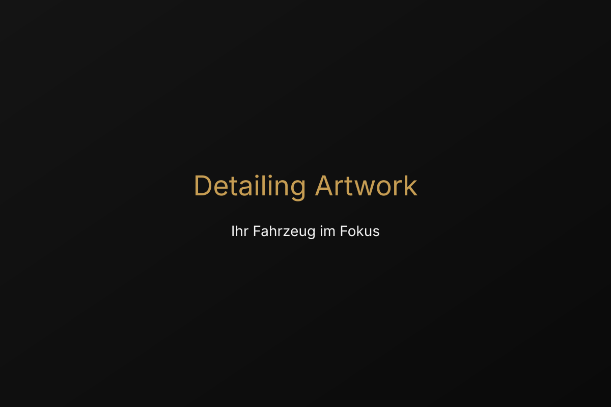

Persönliche Beratung
Vor jedem Auftrag erfolgt eine klare Einschätzung. Größe, Zustand und Verschmutzungsgrad bestimmen die passende Pflege.
Professionelle Fahrzeugpflege für höchste Ansprüche.
Ich kombiniere sorgfältigen Service mit einem feinen Gespür für Details. Jedes Fahrzeug wird individuell analysiert und mit bestmöglichen Produkten gepflegt.
Vor jedem Auftrag erfolgt eine klare Einschätzung. Größe, Zustand und Verschmutzungsgrad bestimmen die passende Pflege.
Termine vergebe ich ausschließlich nach Absprache. So erhält Ihr Fahrzeug die Zeit, die es verdient.
Jede Fläche wird professionell behandelt – vom Lack über Felgen bis zum Innenraum. Das Ergebnis ist deutlich sichtbarer Mehrwert.
Ich biete Lösungen, die Ihr Fahrzeug schützen, aufwerten und langfristig glänzen lassen.
Entfernung feiner Kratzer und Wasserflecken, kombiniert mit einer hochwertigen Politur für tiefen Spiegelglanz.
Gründliche Reinigung von Sitzen, Teppichen und Armaturen. Frische, Desinfektion und hochwertige Pflege inklusive.
Langanhaltender Schutz vor UV-Strahlung, Schmutz und Witterung. Für dauerhafte Wasserabweisung und eine klare Oberfläche.
Die Angebote richten sich nach Fahrzeuggröße, Zustand und Verschmutzungsgrad. Eine fundierte Beratung ist der Schlüssel zu besten Ergebnissen.
Alle Leistungen entdeckenJahrelange Erfahrung in professioneller Fahrzeugpflege. Ich kenne jeden Lacktyp, jedes Material und die optimalen Pflegemethoden – ohne Kompromisse.
Jedes Fahrzeug wird wie ein Kunstobjekt behandelt. Hochwertige Produkte, professionelle Techniken und akribische Sorgfalt garantieren sichtbare Unterschiede.
Nicht nur Sauberkeit – echter Schutz. Mit Versiegelungen und modernen Techniken, die Ihr Fahrzeug langfristig vor Umwelteinflüssen bewahren.
Keine Massenabfertigung. Jeder Termin wird gezielt nach Ihren Wünschen und dem Zustand Ihres Fahrzeugs geplant – für optimale Ergebnisse.
Mein Anspruch ist ein Ergebnis, das Sie sehen und fühlen. Ob pflegeintensiver Klassiker oder moderner Premiumwagen – jedes Projekt wird mit Respekt behandelt.
